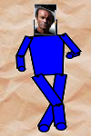
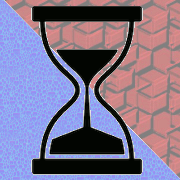

| FighterJet | Earliest (surviving) game I ever made. Remastered in JavaScript. | |
| Road kill | Silly, gory game made by highschool boys. Converted to JavaScript. | |
| Undergrad Sites | I maintained a personal website through college, but social networks have obsoleted this practice. | |
|  | Paper Doll Dancer | Make your friends dance! Early prototype that I'm going to sell to YouTube for $MegaMula. |
| Ohia | I learned Django making a social network prototype. Like most projects: ideator hated my implementaion. Here's a static copy; bit rot is turning the real version into a security nightmare. | |
|  | Contrast-Bath-Timer | 30s ice, 30s heat, 30s ice... makes swollen tendens feel nice |